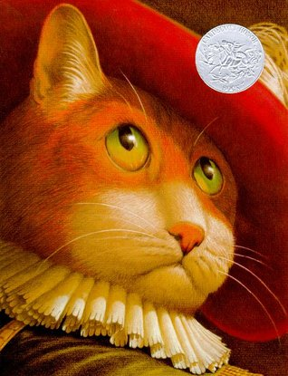
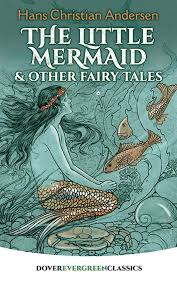
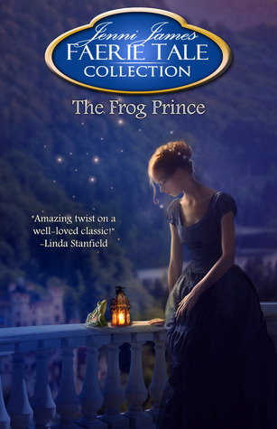

5: Puss in Boots
Ratings : 🌟 4.1/5
Author : Charles Perrault
Genre :Fairy talePicture BookChildren literarture
Year Published : 1697
Pages : 28
Brief:
The tale opens with the third and youngest son of a miller receiving his inheritance—a cat. At first, the youngest son laments, as the eldest brother gains the mill, and the middle brother gets the mules. The feline is no ordinary cat, however, but one who requests and receives a pair of boots. Determined to make his master's fortune, the cat bags a rabbit in the forest and presents it to the king as a gift from his master, the fictional Marquis of Carabas. The cat continues making gifts of game to the king for several months, for which he is rewarded.
One day, the king decides to take a drive with his daughter. The cat persuades his master to remove his clothes and enter the river which their carriage passes. The cat disposes of his master's clothing beneath a rock. As the royal coach nears, the cat begins calling for help in great distress. When the king stops to investigate, the cat tells him that his master the Marquis has been bathing in the river and robbed of his clothing. The king has the young man brought from the river, dressed in a splendid suit of clothes, and seated in the coach with his daughter, who falls in love with him at once.
4: The Little Mermaid
Ratings : 🌟 4.0/5
Author : Hans Christian Andersen
Genre :Fairy tale
Year Published : 1837
Pages : 34
Brief:
The Little Mermaid lives in an underwater kingdom with her widowed father (the sea king or Mer-King), and her five older sisters, each of whom had been born one year apart. When a mermaid turns fifteen, she is permitted to swim to the surface for the first time to catch a glimpse of the world above, and when the sisters become old enough, each of them visits the upper world one at a time every 365 days. As each returns, the Little Mermaid listens longingly to their various descriptions of the world inhabited by human beings.
When the Little Mermaid's turn comes, she rises up to the surface, watches a birthday celebration being held on a ship in honor of a handsome prince, and falls in love with him from a safe distance. A violent storm hits, sinking the ship, and the Little Mermaid saves the prince from drowning. She delivers him unconscious to the shore near a temple. Here, she waits until a young woman from the temple and her ladies in waiting find him. To her dismay, the prince never sees the Little Mermaid or even realizes that it was she who had originally saved his life.
3: The Frog Prince
Ratings : 🌟 3.8/5
Author : Jenni James
Genre :Fairy tale
Year Published : 2013
Pages : 7
Brief:
A prince disguises himself to find true love— Prince Nolan has had enough of Princess Blythe—the woman to whom he has been betrothed since infancy—and her simpering letters. Does the princess truly not have a brain in her head? Never before has he communicated with someone who seemed so childish and spoiled. It was time he met her for himself, to decide if he could actually follow through with this marriage. But to do it right, she must not see how handsome he is. He needs a disguise—something that would show him her true nature. Nolan asks an old herb woman to transform him into a creature that is disgusting to any female—a frog. The spell will last thirty days unless the princess does the impossible and kisses him. Now the true test begins. Will Blythe prove to be as monstrously annoying as he believes she is, or will he learn to see past his judgments and find a loving princess waiting for him?
2: Snow White and the Seven Dwarfs

Ratings : 🌟 4.2/5
Author : Walt Disney Company
Genre :AdventureFairy tale
Year Published : 2003
Pages : 24
Brief:
Now new and old fans can relive the magic of Walt Disney’s classic Snow White and the Seven Dwarfs as it is retold in a beautiful full-color Little Golden Book!
1: Little Red Riding Hood

Ratings : 🌟 4.1/5
Author : Trina Schart Hyman
Genre :Fairy taleChildren literature
Year Published : 1983
Pages : 36
Brief:
The story revolves around a girl called Little Red Riding Hood. In Perrault's versions of the tale, she is named after her red hooded cape/cloak that she wears. The girl walks through the woods to deliver food to her sickly grandmother (wine and cake depending on the translation). In Grimms' version, her mother had ordered her to stay strictly on the path.
A Big Bad Wolf wants to eat the girl and the food in the basket. He secretly stalks her behind trees, bushes, shrubs, and patches of little and tall grass. He approaches Little Red Riding Hood, who naively tells him where she is going. He suggests that the girl pick some flowers as a present for her grandmother, which she does. In the meantime, he goes to the grandmother's house and gains entry by pretending to be her. He swallows the grandmother whole (in some stories, he locks her in the closet) and waits for the girl, disguised as the grandmother.